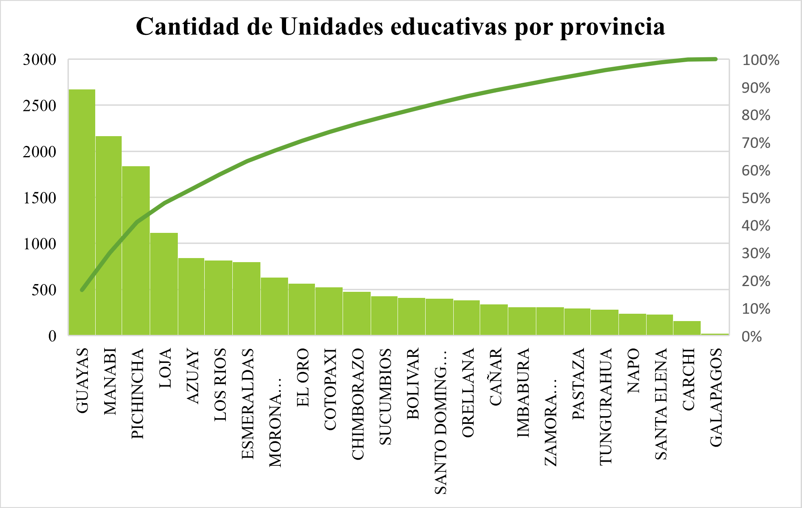

Cantidad de instituciones a nivel nacional

1Indicaciones
Presione cada provincia e indicará la cantidad la cantidad de alumnos en la misma,según la escala.
2Escalas
El mapa consta de una intensidad de colores, en donde los más opacos muestran la mayor cantidad de unidades educativas.